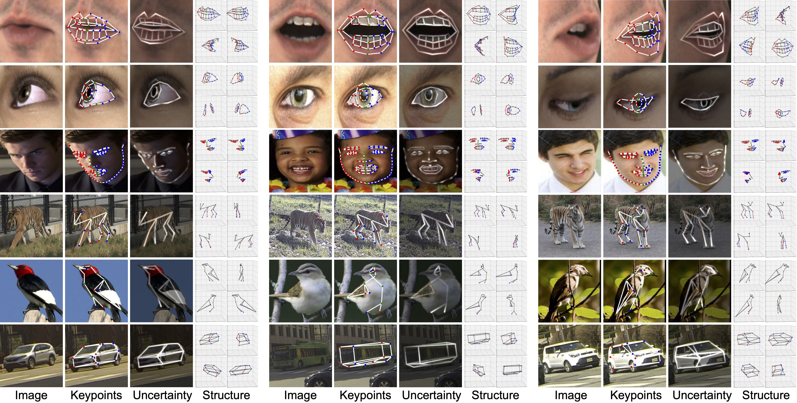

Supervised keypoint localization methods rely on large manually labeled image datasets, where objects can deform, articulate, or occlude. However, creating such large keypoint labels is time-consuming and costly, and is often error-prone due to inconsistent labeling. Thus, we desire an approach that can learn keypoint localization with fewer yet consistently annotated images. To this end, we present a novel formulation that learns to localize semantically consistent keypoint definitions, even for occluded regions, for varying object categories. We use a few user-labeled 2D images as input examples, which are extended via self-supervision using a larger unlabeled dataset. Unlike unsupervised methods, the few-shot images act as semantic shape constraints for object localization. Furthermore, we introduce 3D geometry-aware constraints to uplift keypoints, achieving more accurate 2D localization. Our general-purpose formulation paves the way for semantically conditioned generative modeling and attains competitive or state-of-the-art accuracy on several datasets, including human faces, eyes, animals, cars, and never-before-seen mouth interior (teeth) localization tasks, not attempted by the previous few-shot methods.
Given an image, we detect the keypoints and their uncertainty. They are used to generate an edge map, which is concatenated with a randomly masked image to reconstruct the original image. The keypoints are forced to be semantically meaningful by few-shot supervision and consistent by reconstruction. The 3D geometric constraint ensures the lifted 3D keypoints meaningful. In addition, the 2D geometric constraint increases the robustness of keypoints.
With only few shots, the model learns semantically consistent and meaningful keypoints. We only use 10 2D annotations except for tigers, where 20 2D annotations are used.
